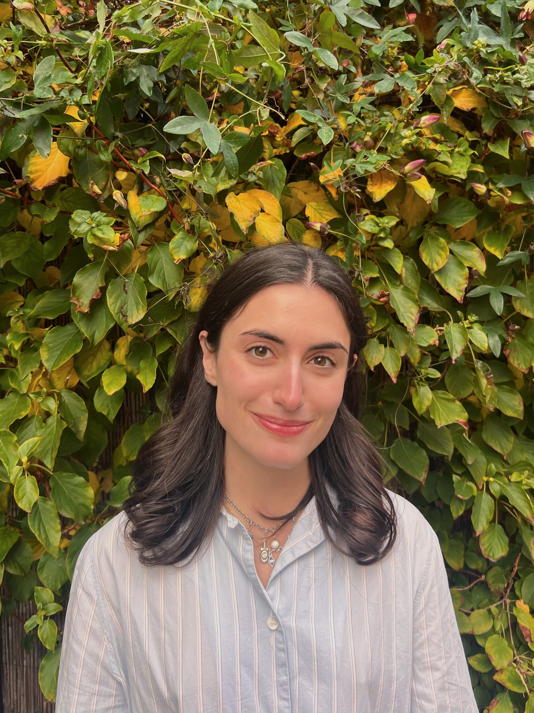

I am a PhD candidate in behavioral and experimental economics at GATE-Lyon and Université Lumière Lyon 2, supervised by Eugenio Verrina and Fabio Galeotti. I use field and laboratory experiments to study how people make decisions in social and institutional contexts, and how the social norms, beliefs, and incentives shape behavior.
Before starting my PhD, I received an M.Sc. in Economics (cand. polit.) at the University of Copenhagen, and a B.Sc. in Economics at Middle East Technical University.
A full version of my curriculum vitae is available below (Updated in June 2026).
Download CV (PDF)